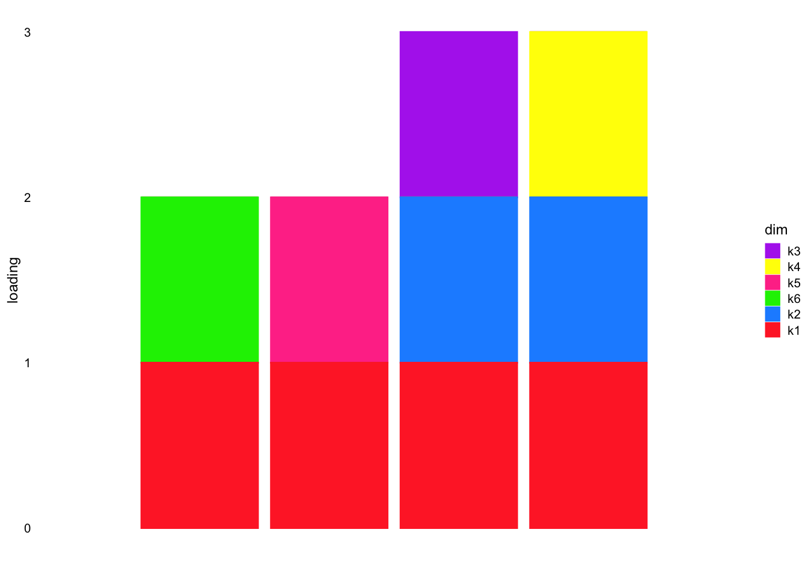

distance-based-regression-simulation
Annie Xie
2024-05-07
Last updated: 2024-06-30
Checks: 7 0
Knit directory:
drift_matrix_factorization/
This reproducible R Markdown analysis was created with workflowr (version 1.7.1). The Checks tab describes the reproducibility checks that were applied when the results were created. The Past versions tab lists the development history.
Great! Since the R Markdown file has been committed to the Git repository, you know the exact version of the code that produced these results.
Great job! The global environment was empty. Objects defined in the global environment can affect the analysis in your R Markdown file in unknown ways. For reproduciblity it’s best to always run the code in an empty environment.
The command set.seed(20240416) was run prior to running
the code in the R Markdown file. Setting a seed ensures that any results
that rely on randomness, e.g. subsampling or permutations, are
reproducible.
Great job! Recording the operating system, R version, and package versions is critical for reproducibility.
Nice! There were no cached chunks for this analysis, so you can be confident that you successfully produced the results during this run.
Great job! Using relative paths to the files within your workflowr project makes it easier to run your code on other machines.
Great! You are using Git for version control. Tracking code development and connecting the code version to the results is critical for reproducibility.
The results in this page were generated with repository version 4d5b751. See the Past versions tab to see a history of the changes made to the R Markdown and HTML files.
Note that you need to be careful to ensure that all relevant files for
the analysis have been committed to Git prior to generating the results
(you can use wflow_publish or
wflow_git_commit). workflowr only checks the R Markdown
file, but you know if there are other scripts or data files that it
depends on. Below is the status of the Git repository when the results
were generated:
Ignored files:
Ignored: .DS_Store
Ignored: .Rhistory
Note that any generated files, e.g. HTML, png, CSS, etc., are not included in this status report because it is ok for generated content to have uncommitted changes.
These are the previous versions of the repository in which changes were
made to the R Markdown
(analysis/distance-based-regression-simulation.Rmd) and
HTML (docs/distance-based-regression-simulation.html)
files. If you’ve configured a remote Git repository (see
?wflow_git_remote), click on the hyperlinks in the table
below to view the files as they were in that past version.
| File | Version | Author | Date | Message |
|---|---|---|---|---|
| Rmd | 4d5b751 | Annie Xie | 2024-06-30 | Add distance-based regression method and simulation |
Introduction
When exploring the data-based regression method (where we regress the gram matrix over the different binary vector matrix options), Matthew and I noticed a non-identifiability issue with the results. For example, in the four population example where the data has a bifurcating tree structure, instead of finding a loading vector that is \([1 \ 0 \ 0 \ 0]\), it will instead find a loading vector of \([0 \ 1 \ 1 \ 1]\). Both vectors distinguish population 1 from the other three populations. However, the baseline or the root of the tree is different, leading to different representations. Another observation that was made is that we need to place enough regularization on the coefficients to get a parsimonious representation. I originally did not have enough regularization. Another comment is that I should not normalize the loadings in the structure plot. That way, we can see if a factor is depicting significant sources of variation or if they are just overfitting to noise.
As a result of the first observation, Matthew suggested a new variation of this regression method. We are really interested in obtaining a representation of the distance matrix which is defined as \[D_{ij} = \sum_{l} (X_{il} - X_{jl})^2.\] We can write this in matrix form as \[D = \alpha \bf{1}^{T} + \bf{1} \alpha^{T} - 2(X^{T}X).\] where \(\alpha\) is a vector with entries \(\alpha_i = X_i^{T}X_i\).
Mathematically, we want an approximation such that \[D_{ij} \approx \sum_{k} (l_{ki} - l_{kj})^2.\] In matrix form, this can be written as \[D \approx \beta \bf{1}^{T} + \bf{1} \beta^{T} - 2LL^{T}\] Note that if \(LL^{T} = X^{T}X\), then working from the definition of \(D\), we get the approximation we desire. (Also note that \(\alpha\) is a function of \(X^{T}X\) and \(\beta\) is an analogous function of \(LL^{T}\)).
Our previous method involves factoring \(X^{T}X\), and potentially requires some post-processing of the results due to the non-identifiability of the mapping from \(X^{T}X\) to \(D\). To try to circumvent the identifiability issues, we wanted to develop a new factorization method that works with \(D\) directly.
More specifically, we will model the following sum: \[D_{ij} \approx \sum_{k} \lambda_k (l_{ki} - l_{kj})^2\] which is also referred to as a split decomposition. For this regression, we only need to consider the binary vectors with up to \(n/2\) 1’s (because the other binary vectors will map to an already existing summand).
Packages and Functions for analyses
library(ggplot2)
library(pheatmap)
library(NNLM)plot_heatmap <- function(L, title = ""){
### define the color map
cols <- colorRampPalette(c("gray96", "red"))(49)
brks <- seq(min(L), max(L), length=50)
plt <- pheatmap(L, show_rownames = FALSE, show_colnames = FALSE, cluster_rows = FALSE, cluster_cols = FALSE, color = cols, breaks = brks, main = title)
return(plt)
}structure_plot_general = function(Lhat,Fhat,grouping,title=NULL, loadings_order = 'embed', print_plot=FALSE, seed=12345, n_samples = NULL, gap=40, show_legend=TRUE, K = NULL, plot.colors = NULL, normalize = FALSE){
set.seed(seed)
#if not told to plot all samples, then plot a sub-sample
if(is.null(n_samples)&all(loadings_order == "embed")){
n_samples = 2000
}
if(is.null(plot.colors)){
plot.colors <- rainbow(ncol(Lhat))
}
#normalize L such that each factor has a maximum loading value of 1
#results in an error if all the entries of a column are 0
# this doesn't do the normalization if all the entries are below 1 (think about!)
if (normalize == TRUE){
Lhat = apply(Lhat,2,function(z){z/max(max(z),0.00001)})
}
#if not told to plot all factors, then plot the requested subset
if(!is.null(K)){
Lhat = Lhat[,1:K]
Fhat = Fhat[,1:K]
}
Fhat = matrix(1,nrow=3,ncol=ncol(Lhat))
#add column names to Lhat if it doesn't have column names
if(is.null(colnames(Lhat))){
colnames(Lhat) <- paste0("k",1:ncol(Lhat))
}
#define multinom_topic_model_fit for structure plot function
fit_list <- list(L = Lhat,F = Fhat)
class(fit_list) <- c("multinom_topic_model_fit", "list")
#plot
p <- fastTopics::structure_plot(fit_list,grouping = grouping, loadings_order = loadings_order, n = n_samples, colors = plot.colors, gap = gap,verbose=F) + labs(y = "loading",color = "dim",fill = "dim") + ggtitle(title)
if(!show_legend){
p <- p + theme(legend.position="none")
}
if(print_plot){
print(p)
}
return(p)
}Functions for the penalized regression method
compute_distance <- function(X){
#crossprod_X <- X %*% t(X) # assume X is samples by features
crossprod_X <- tcrossprod(X)
alpha <- diag(crossprod_X)
n <- length(alpha)
D <- as.matrix(alpha) %*% t(rep(1, n)) + as.matrix(rep(1,n)) %*% t(alpha) - 2*crossprod_X
return(D)
}compute_vector_distance_matrix <- function(l_k){
l_k_distance <- stats::dist(as.matrix(l_k), diag = FALSE) #this only outputs lower triangular part (not including diagonal)
return(l_k_distance)
}#small sample workflow
distance_matrix_factorization <- function(P = NULL, alpha_l1 = 0, dist_matrix = NULL){
if (is.null(dist_matrix) == TRUE){
dist_matrix <- compute_distance(P)
n = nrow(P) # assume P is samples by features
print(n)
}
else{
n <- nrow(dist_matrix)
}
L_options <- t(expand.grid(replicate(n, 0:1, simplify = FALSE)))
num_of_ones <- colSums(L_options)
L_options <- L_options[,(num_of_ones <= (n/2))] # replace the zero vector with vector of all ones (I think a vector of all ones is more interpretable than a zero vector)
#L_options[,(colSums(L_options) == 0)] <- rep(1,n)
#if n/2 is even
idx_halfn <- L_options[,(colSums(L_options) == (n/2))]
test_corr <- cor(idx_halfn, idx_halfn)
test_complement <- (test_corr == -1)
complements <- which(test_complement, arr.ind = TRUE)
complements_keep <- complements[c(1:(nrow(complements)/2)), 2] #might need to change this
L_options <- cbind(L_options[,(colSums(L_options) < (n/2))], idx_halfn[,complements_keep])
L_options[,(colSums(L_options) == 0)] <- rep(1,n)
#should I just fit off-diagonals since the diagonals of a distance matrix are zero
#should I just fit the lower-triangular part since a distance matrix is symmetric
LLt_options <- matrix(rep(0, ncol(L_options)*(0.5*n*(n-1))), ncol = ncol(L_options))
for (i in 1:ncol(L_options)){
LLt_options[,i] <- c(compute_vector_distance_matrix(L_options[,i]))
}
D_lower <- lower.tri(dist_matrix, diag = FALSE)
D_lower_vec <- c(dist_matrix)[c(D_lower)]
nnlm_fit <- nnlm(LLt_options, as.matrix(D_lower_vec, ncol = 1), alpha = c(0,0,alpha_l1))
indices_keep <- (nnlm_fit$coefficients > 0)
lambda <- nnlm_fit$coefficients[indices_keep]
X_keep <- LLt_options[,indices_keep]
L_est <- L_options[,indices_keep] %*% diag(sqrt(lambda)) # double check this
dist_est_vals <- LLt_options %*% nnlm_fit$coefficients
dist_est <- matrix(rep(0, n*n), ncol = n)
dist_est[lower.tri(dist_est,diag=FALSE)] <- dist_est_vals
dist_est <- as.matrix(Matrix::forceSymmetric(dist_est, uplo="L"))
return(list(nnlm_fit = nnlm_fit, L_est = L_est, dist_est = dist_est))
}Simulation on data generated from model
Data Generation
To generate the data, I took a binary \(L\) matrix, and computed the corresponding distance matrices for each column of \(L\). Then I took the sum of these matrices and added normal noise to generate the data. This data generation process is in line with the regression model we fit.
generate_data_from_model <- function(noise_sd){
LL <- matrix(0, nrow = 4, ncol = 6)
LL[, 1] <- 1
LL[, 2] <- c(1, 1, 0, 0)
#LL[, 3] <- rep(c(0, 0, 1, 1), times = pop_sizes)
LL[, 3] <- c(1, 0, 0, 0)
LL[, 4] <- c(0, 1, 0, 0)
LL[, 5] <- c(0, 0, 1, 0)
LL[, 6] <- c(0, 0, 0, 1)
distance_matrices_list <- list()
for (i in 1:ncol(LL)){
distance_matrices_list[[i]] <- compute_vector_distance_matrix(LL[,i])
}
Y <- c(Reduce('+', distance_matrices_list)) + rnorm(length(c(distance_matrices_list[[1]])), mean = 0, sd = noise_sd)
return(list(Y = Y, LL = LL))
}dist_data <- generate_data_from_model(0.1)structure_plot_general(dist_data$LL,
dist_data$LL,
n_samples = 4,
plot.colors = c('#FF3030', '#1E90FF', '#B23AEE', '#FFFF00', '#FF3E96', '#00EE00',
'#97FFFF'))
Using Penalized Regression to Factorize
Hypothesis
I hypothesize that the penalized regression method will be able to recover the desired structure since the data is generated under the assumptions of the model.
Analysis
dist_matrix <- matrix(rep(0, 4*4), ncol = 4)
dist_matrix[lower.tri(dist_matrix,diag=FALSE)] <- dist_data$Y
dist_matrix <- as.matrix(Matrix::forceSymmetric(dist_matrix,uplo="L"))plot_heatmap(dist_matrix)set.seed(2042)
fit.regression <- distance_matrix_factorization(alpha_l1 = 0.05, dist_matrix = dist_matrix)Warning in nnlm(LLt_options, as.matrix(D_lower_vec, ncol = 1), alpha = c(0, : x
does not have a full column rank. Solution may not be unique.# dist_est <- compute_distance(fit.regression$L_est)plot_heatmap(fit.regression$dist_est)This is a plot of the fitted values vs. observed values:
ggplot(data = NULL, aes(x = c(dist_matrix), y = c(fit.regression$dist_est))) + geom_point() + geom_abline(intercept = 0, slope = 1, color = 'red') + xlab('Observed Values') + ylab('Fitted Values') This is a plot of the residuals:
fit.residuals <- c(dist_matrix) - c(fit.regression$dist_est)
ggplot(data = NULL, aes(x = c(1:length(fit.residuals)), y = fit.residuals)) + geom_point() + geom_hline(yintercept = 0)plot_heatmap(dist_matrix - fit.regression$dist_est)Visualization of Loadings
dim(fit.regression$L_est)[1] 4 6This is a heatmap of the loadings:
plot_heatmap(fit.regression$L_est)plot_heatmap(t(t(fit.regression$L_est)/apply(fit.regression$L_est,2, max)))This is a structure plot of the loadings:
structure_plot_general(fit.regression$L_est, fit.regression$L_est,
n_samples = 4,
plot.colors = c('#FF3030', '#1E90FF', '#B23AEE', '#FFFF00', '#FF3E96', '#00EE00',
'#97FFFF', '#FF7F00', '#FFAEB9', '#698B22'), normalize = FALSE)Observations
The regression estimate was able to differentiate populations 1 and 2 from populations 3 and 4. Something that was surprising to me was it kept the other 2-split binary vectors. I am not exactly sure why.
Check objective function
I wanted to check the objective function value to see if the algorithm gets stuck in local optima. The objective function is non-convex due to the non-negativity constraint, and so it’s possible that the algorithm is getting stuck.
regression_obj_function <- function(y,x,beta,lambda){
obj_val <- mean((as.matrix(y, ncol = 1) - x%*%as.matrix(beta, ncol = 1))^2) + lambda*sum(abs(beta))
return(obj_val)
}# objective function value of estimate
#fit.regression$nnlm_fit$error[['MSE']] + 0.05*sum(abs(fit.regression$nnlm_fit$coefficients))
obj_function_from_fit <- function(fit.regression, alpha_l1){
return(fit.regression$nnlm_fit$error[['MSE']] + alpha_l1*sum(abs(fit.regression$nnlm_fit$coefficients)))
}
obj_function_from_fit(fit.regression, 0.05)[1] 0.2034#objective function value of true values
distance_matrices_list <- list()
for (i in 1:ncol(dist_data$LL)){
distance_matrices_list[[i]] <- compute_vector_distance_matrix(dist_data$LL[,i])
}
vectorized_simple_distances <- NULL
for (i in 1:length(distance_matrices_list)){
vectorized_simple_distances <- cbind(vectorized_simple_distances, c(distance_matrices_list[[i]]))
}
regression_obj_function(dist_data$Y, vectorized_simple_distances, rep(1, ncol(vectorized_simple_distances)), 0.05)[1] 0.3073704We see that the objective function value corresponding to the estimates is lower than that corresponding to the true values. This suggests that the outputted values are “better” estimates with respect to this objective function than the true values used to generate the data. (Note that I don’t expect the true values to be the best estimates since we are working with noisy data. However, we hope that something close to the true values is the best estimate.) This does not suggest that the algorithm is getting stuck in local optima. Perhaps there are identifiability issues with this problem, or this is a hard problem to solve.
Testing different levels of regularization
I also tried different levels of regularization. I found that small levels of regularization, e.g. \(\alpha = 10^{-10}\) led to a loadings estimate that looked more similar to the true loadings value.
set.seed(2042)
fit.regression_alpha_small <- distance_matrix_factorization(alpha_l1 = 10^(-10), dist_matrix = dist_matrix)Warning in nnlm(LLt_options, as.matrix(D_lower_vec, ncol = 1), alpha = c(0, : x
does not have a full column rank. Solution may not be unique.structure_plot_general(fit.regression_alpha_small$L_est, fit.regression_alpha_small$L_est,
n_samples = 4,
plot.colors = c('#FF3030', '#1E90FF', '#B23AEE', '#FFFF00', '#FF3E96', '#00EE00',
'#97FFFF', '#FF7F00', '#FFAEB9', '#698B22'), normalize = FALSE)There is a vector that differentiates populations 1 and 2 from populations 3 and 4. There are also four vectors which differentiate one population from the other three populations. And then there are an additional two 2-split binary vector. The weights on these vector are smaller than the other weights, so it’s possible that these vectors are modeling noise.
This means that when the l1-penalty is increased, the coefficients for the 2-split binary vectors are increased and the weights for the population-specific vectors are decreased.
Simulation on tree data
Data Generation
To generate the data, I modified code I found from Jason’s github repository. We are modeling four populations that follow a tree structure. Therefore, the loadings matrix is binary and has a hierarchical structure. The entries of the factor matrix are generated using normal random variables. Normal random noise is added to the product of the loadings and factor matrix. One thing to note is that the signal to noise ratio (and thus the variance of the estimate) is partially affected by the number of genes we are simulating. It might be interesting to vary the number of genes simulated and see how that affects the estimate. (Note that this set up is different from the previous – in the previous set up, I was generating data directly from the method’s data model. Therefore, I did not generate a factor matrix.)
# modified from Jason's code
sim_4pops_noadmix <- function(pop_sizes,
branch_sds,
indiv_sd,
n_genes = 1000,
seed = 666) {
set.seed(seed)
n <- sum(pop_sizes)
p <- n_genes
FF <- matrix(rnorm(7 * p, sd = rep(branch_sds, each = p)), ncol = 7)
LL <- matrix(0, nrow = n, ncol = 7)
LL[, 1] <- 1
LL[, 2] <- rep(c(1, 1, 0, 0), times = pop_sizes)
LL[, 3] <- rep(c(0, 0, 1, 1), times = pop_sizes)
LL[, 4] <- rep(c(1, 0, 0, 0), times = pop_sizes)
LL[, 5] <- rep(c(0, 1, 0, 0), times = pop_sizes)
LL[, 6] <- rep(c(0, 0, 1, 0), times = pop_sizes)
LL[, 7] <- rep(c(0, 0, 0, 1), times = pop_sizes)
E <- matrix(rnorm(n * p, sd = indiv_sd), nrow = n)
pops <- rep(LETTERS[1:length(pop_sizes)], times = pop_sizes)
return(list(Y = LL %*% t(FF) + E, LL = LL, FF = FF, pops = pops))
}# modified from Jason's code
sim_data_4pop_10kgenes <- sim_4pops_noadmix(pop_sizes = c(rep(1, 4)),
branch_sds = rep(1,7),
indiv_sd = 1,
n_genes = 10000)dim(sim_data_4pop_10kgenes$Y)[1] 4 10000plot_heatmap(sim_data_4pop_10kgenes$LL)
plot_heatmap(sim_data_4pop_10kgenes$Y %*% t(sim_data_4pop_10kgenes$Y)/ ncol(sim_data_4pop_10kgenes$Y))structure_plot_general(sim_data_4pop_10kgenes$LL,
sim_data_4pop_10kgenes$LL,
n_samples = 4,
plot.colors = c('#FF3030', '#1E90FF', '#B23AEE', '#FFFF00', '#FF3E96', '#00EE00',
'#97FFFF'))
We see that all the populations share k1 (the red bar). In addition, populations 1 and 2 share k3 (the purple bar) and populations 3 and 4 share k2 (the dark blue bar). Each individual population also has their own unique component that distinguishes them from the other populations.
Using Penalized Regression to Factorize
Hypothesis
I hypothesize that the regression should be able to recover the true loadings (with a high enough amount of regularization).
Analysis
dist_matrix2 <- compute_distance(sim_data_4pop_10kgenes$Y)plot_heatmap(dist_matrix2)set.seed(2042)
fit.regression2 <- distance_matrix_factorization(sim_data_4pop_10kgenes$Y, alpha_l1 = 30)[1] 4Warning in nnlm(LLt_options, as.matrix(D_lower_vec, ncol = 1), alpha = c(0, : x
does not have a full column rank. Solution may not be unique.dist_est2 <- fit.regression2$dist_estplot_heatmap(dist_est2)This is a plot of the fitted values vs. observed values:
ggplot(data = NULL, aes(x = c(dist_matrix2), y = c(dist_est2))) + geom_point() + geom_abline(intercept = 0, slope = 1, color = 'red') + xlab('Observed Values') + ylab('Fitted Values') This is a plot of the residuals:
fit.residuals2 <- c(dist_matrix2) - c(dist_est2)
ggplot(data = NULL, aes(x = c(1:length(fit.residuals2)), y = fit.residuals2)) + geom_point() + geom_hline(yintercept = 0)plot_heatmap(dist_matrix2 - dist_est2)This is the MSE:
obj_function_from_fit(fit.regression2, 0)[1] 112.5Visualization of Loadings
dim(fit.regression2$L_est)[1] 4 6This is a heatmap of the loadings:
plot_heatmap(fit.regression2$L_est)plot_heatmap(t(t(fit.regression2$L_est)/apply(fit.regression2$L_est,2, max)))This is a structure plot of the loadings:
structure_plot_general(fit.regression2$L_est, fit.regression2$L_est,
n_samples = 4,
plot.colors = c('#FF3030', '#1E90FF', '#B23AEE', '#FF3E96', '#FFFF00', '#00EE00',
'#97FFFF', '#FF7F00', '#FFAEB9', '#698B22'), normalize = FALSE)Observations
The regression estimate is able to differentiate populations 1 and 2 from populations 3 and 4, which is good. It also finds some individual population effects. However, these effects are relatively small. It’s possible that the population-specific effects were clumped into the residual variance, so this result is not too surprising to me. A part of the estimate that was surprising to me was the inclusion of the other 2-split binary vectors. I am not exactly sure why it includes these.
I also tried different regularization levels. One interesting observation is that for an l1-penalty weighting of \(\alpha = 1\), the loadings estimate looks more like the true loadings value.
set.seed(2042)
fit.regression2_alpha1 <- distance_matrix_factorization(sim_data_4pop_10kgenes$Y, alpha_l1 = 1)[1] 4Warning in nnlm(LLt_options, as.matrix(D_lower_vec, ncol = 1), alpha = c(0, : x
does not have a full column rank. Solution may not be unique.dim(fit.regression2_alpha1$L_est)[1] 4 7structure_plot_general(fit.regression2_alpha1$L_est, fit.regression2_alpha1$L_est,
n_samples = 4,
plot.colors = c('#FF3030', '#1E90FF', '#B23AEE', '#FF3E96', '#FFFF00', '#00EE00',
'#97FFFF', '#FF7F00', '#FFAEB9', '#698B22'), normalize = FALSE)obj_function_from_fit(fit.regression2_alpha1, 0)[1] 0.05092593There is a vector that differentiates populations 1 and 2 from populations 3 and 4. There are also four vectors which differentiate one population from the other three populations. And then there are two other 2-split binary vectors. The weights on these two vectors are smaller than the other weights, so it’s possible that these vectors are modeling noise.
If I increase the l1-penalty value enough, the resulting loadings estimate changes to put higher weight on the 2-split vectors rather than the individual population vectors. Furthermore, when the penalty is increased enough to zero out more coefficients, the coefficients on the population-specific vectors get zeroed out before the the coefficients for the 2-split vectors. Another note is the loadings estimate from the \(\alpha = 1\) penalty weighting has a better fit to the data than the estimate from the \(\alpha = 30\) penalty weighting. This suggests that the choice of l1-penalty weighting is important.
sessionInfo()R version 4.3.2 (2023-10-31)
Platform: aarch64-apple-darwin20 (64-bit)
Running under: macOS Sonoma 14.4.1
Matrix products: default
BLAS: /Library/Frameworks/R.framework/Versions/4.3-arm64/Resources/lib/libRblas.0.dylib
LAPACK: /Library/Frameworks/R.framework/Versions/4.3-arm64/Resources/lib/libRlapack.dylib; LAPACK version 3.11.0
locale:
[1] en_US.UTF-8/en_US.UTF-8/en_US.UTF-8/C/en_US.UTF-8/en_US.UTF-8
time zone: America/New_York
tzcode source: internal
attached base packages:
[1] stats graphics grDevices utils datasets methods base
other attached packages:
[1] NNLM_0.4.4 pheatmap_1.0.12 ggplot2_3.5.1 workflowr_1.7.1
loaded via a namespace (and not attached):
[1] tidyselect_1.2.1 viridisLite_0.4.2 farver_2.1.2 dplyr_1.1.4
[5] fastmap_1.2.0 lazyeval_0.2.2 promises_1.3.0 digest_0.6.35
[9] lifecycle_1.0.4 survival_3.6-4 processx_3.8.4 invgamma_1.1
[13] magrittr_2.0.3 compiler_4.3.2 rlang_1.1.3 sass_0.4.9
[17] progress_1.2.3 tools_4.3.2 utf8_1.2.4 yaml_2.3.8
[21] data.table_1.15.4 knitr_1.45 labeling_0.4.3 prettyunits_1.2.0
[25] htmlwidgets_1.6.4 RColorBrewer_1.1-3 Rtsne_0.17 withr_3.0.0
[29] purrr_1.0.2 grid_4.3.2 fansi_1.0.6 git2r_0.33.0
[33] fastTopics_0.6-142 colorspace_2.1-0 scales_1.3.0 MASS_7.3-60.0.1
[37] mcmc_0.9-8 cli_3.6.2 rmarkdown_2.27 crayon_1.5.2
[41] generics_0.1.3 RcppParallel_5.1.7 rstudioapi_0.16.0 httr_1.4.7
[45] pbapply_1.7-2 cachem_1.1.0 stringr_1.5.1 splines_4.3.2
[49] parallel_4.3.2 vctrs_0.6.5 Matrix_1.6-5 jsonlite_1.8.8
[53] SparseM_1.81 callr_3.7.6 MCMCpack_1.7-0 hms_1.1.3
[57] mixsqp_0.3-54 ggrepel_0.9.5 irlba_2.3.5.1 plotly_4.10.4
[61] jquerylib_0.1.4 tidyr_1.3.1 glue_1.7.0 ps_1.7.6
[65] uwot_0.1.16 cowplot_1.1.3 stringi_1.8.4 gtable_0.3.5
[69] later_1.3.2 quadprog_1.5-8 munsell_0.5.1 tibble_3.2.1
[73] pillar_1.9.0 htmltools_0.5.8.1 quantreg_5.97 truncnorm_1.0-9
[77] R6_2.5.1 rprojroot_2.0.4 evaluate_0.23 lattice_0.22-6
[81] highr_0.11 SQUAREM_2021.1 ashr_2.2-66 httpuv_1.6.15
[85] bslib_0.7.0 MatrixModels_0.5-3 Rcpp_1.0.12 coda_0.19-4.1
[89] whisker_0.4.1 xfun_0.44 fs_1.6.4 getPass_0.2-4
[93] pkgconfig_2.0.3